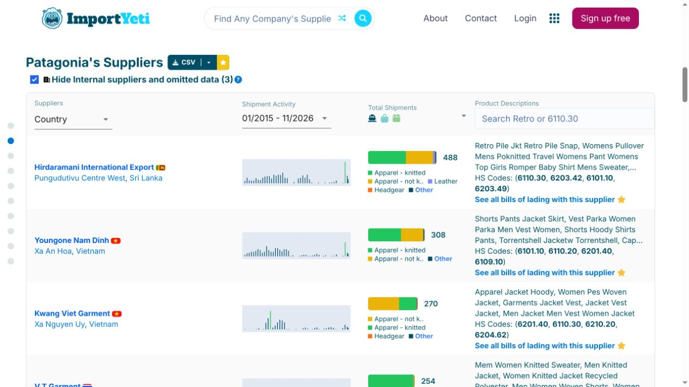

ImportYeti hands-on: researching suppliers through shipment records
We searched for Patagonia and reviewed its import overview, supplier list, shipment counts and product HS codes to test ImportYeti for supplier research.
Test setup
This test used ImportYeti's public search without signing in. We used Patagonia as an example and only viewed public sea-import records; no account was created and no personal information was submitted.
The service updates its records over time. Numbers and interface details in this guide reflect the live test on November 19, 2026.
Step 1: Search for a target company
After entering Patagonia, the results page showed both company and supplier profiles, along with total shipments, latest shipment dates and related names. Checking the company type and address first helps avoid selecting a similarly named business.

Step 2: Review the import overview
The company profile shows the latest shipment, total sea shipments, average TEU and estimated shipping spend. The timeline can help identify seasonality, but estimates should be treated as research signals rather than official company figures.

Step 3: Analyze suppliers and product signals
The supplier table lists supplier names, countries, shipment counts, product descriptions and HS codes. Shipment frequency can indicate activity, while product descriptions and HS codes help narrow the list to factories relevant to a product category.
These records only show relationships found in public bills of lading. They do not prove a current partnership or validate quality, compliance or delivery capability. Independent due diligence is still required before contacting or selecting a supplier.

Hands-on verdict
ImportYeti is useful for early-stage research into US importers and supplier relationships, especially when looking for supply-chain leads from comparable brands. It does not replace supplier verification and does not cover every shipping mode or country, so it works best as the first step in a sourcing workflow.